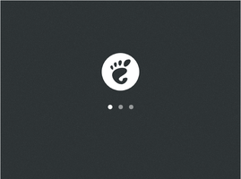
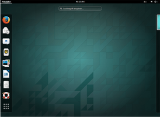

Ubuntu GNOME
 Ubuntu GNOME
Ubuntu GNOME  ist eine offizielle Variante von Ubuntu mit der Desktopumgebung GNOME 3. Das Hauptaugenmerk der Entwickler richtet sich darauf, den GNOME-Desktop in einer möglichst unveränderten Form anzubieten. Daher setzt Ubuntu GNOME auch auf die GNOME Shell. Die Version 14.04 von Ubuntu GNOME besitzt erstmals einen LTS-Status und erhält 3 Jahre Updates und Unterstützung durch die Entwickler.
ist eine offizielle Variante von Ubuntu mit der Desktopumgebung GNOME 3. Das Hauptaugenmerk der Entwickler richtet sich darauf, den GNOME-Desktop in einer möglichst unveränderten Form anzubieten. Daher setzt Ubuntu GNOME auch auf die GNOME Shell. Die Version 14.04 von Ubuntu GNOME besitzt erstmals einen LTS-Status und erhält 3 Jahre Updates und Unterstützung durch die Entwickler.
Geschichte¶
Bis einschließlich Ubuntu 10.10 war die Oberfläche von GNOME 2 fester Bestandteil von Ubuntu. Mit dem Wechsel von GNOME 2 auf GNOME 3 entschied sich Canonical, die Eigenentwicklung Unity statt der GNOME Shell einzusetzen. Dies hatte zur Folge, dass es keine Ubuntu-Variante mit der GNOME Shell als Oberfläche mehr gab. Das Nachinstallieren der GNOME Shell aus den offiziellen Quellen war auch nicht zufriedenstellend, da Canonical für die Desktop-Oberfläche Unity immer noch auf Bestandteile des GNOME-Projekts nutzt, diese aber an die Bedürfnisse von Unity angepasst hat. Dies hatte zur Folge, dass die neusten Versionen der GNOME Shell nicht in den offiziellen Paketquellen verfügbar waren und auch ein vollständiger Wechsel zum GNOME-Desktop nicht problemlos möglich war.
Erst über eineinhalb Jahre später wurde im Oktober 2012 eine erste auf Ubuntu 12.10 basierende inoffizielle Version veröffentlicht, damals noch unter dem Namen "Ubuntu GNOME Remix". Mit Ubuntu 13.04 erschien dann die erste offizielle Version mit dem Namen "Ubuntu GNOME".
|  |
| 14.04 - Startvorgang |
 |
| 14.04 - Grafische Anmeldung |
|  |
| 14.04 - Desktop |
Hardwareanforderungen¶
Arbeitsspeicher: mindestens 1,5 GiB RAM werden für flüssiges Arbeiten empfohlen
Prozessor: mindestens ein 1 GHz Prozessor (beispielsweise Intel Celeron) oder besser
Grafikkarte: 3D-Unterstützung muss explizit vorhanden sein, um die GNOME Shell nutzen zu können
Festplattenspeicher: 7 GiB (ohne Benutzerdaten) oder mehr
Unterschiede¶
Im Vergleich mit einen "reinen" GNOME sind unter Ubuntu GNOME nicht nur einige Programme vorinstalliert (siehe nächster Abschnitt), sondern auch ein paar Spezialitäten vorhanden.
Programme¶
Ubuntu GNOME ergänzt die Desktop-Umgebung GNOME mit einer Reihe vorinstallierter Anwendungen aus den offiziellen Paketquellen (siehe auch Standardanwendungen und Applications in Ubuntu GNOME ). Nachfolgend eine kurze Übersicht:
| Standardanwendungen von Ubuntu GNOME | ||
| Bereich | Anwendung | Programm |
| Büro | Textverarbeitung | LibreOffice Writer |
| Dokumentenbetrachter | Evince | |
| Tabellenkalkulation | LibreOffice Calc | |
| Grafik | Bildbetrachter | Eye of GNOME |
| Internet | Webbrowser | Firefox |
| Instant Messenger | Empathy | |
| Evolution | ||
Multimedia | Audioplayer | Rhythmbox |
| Videoplayer | Totem | |
| System | Systeminformationen | Systemüberwachung |
| Netzwerkmanager | NetworkManager | |
| Paketverwaltung | Ubuntu Software bzw. Software-Center | |
| Systemeinstellungen | Systemeinstellungen | |
| Zubehör | Archivmanager | File Roller |
| Editor | gEdit | |
| Dateimanager | Dateien | |
| Terminalemulator | GNOME Terminal | |
| Taschenrechner | Calculator | |
Problembehebung¶
Aktuelle Programmversionen nutzen¶
Im Unterschied zu anderen Linux-Distributionen muss man unter Ubuntu GNOME meistens mit veralteten Version der einzelnen GNOME-Programme vorlieb nehmen. Erschwerend kommt noch hinzu, dass die einzelnen Komponenten nicht alle aus der gleichen Serie stammen, sondern unterschiedlichen GNOME-Versionen entnommen wurden. So kann es beispielsweise sein, dass unter 15.04 die Programme Nautilus genauso wie die GNOME Shell in Version 3.14 vorliegen, während Gedit noch auf dem Stand von Version 3.10 ist.
Möchte man auch unter Ubuntu einen konsistenten und einigermaßen aktuellen GNOME3-Desktop nutzen, dann empfiehlt es sich das offizielle "Personal Packages Archiv" (PPA) der Entwickler von Ubuntu GNOME zu aktivieren.
Adresszeile zum Hinzufügen des PPAs:
ppa:gnome3-team/gnome3
Hinweis!
Zusätzliche Fremdquellen können das System gefährden.
Ein PPA unterstützt nicht zwangsläufig alle Ubuntu-Versionen. Weitere Informationen sind der  PPA-Beschreibung des Eigentümers/Teams gnome3-team zu entnehmen.
PPA-Beschreibung des Eigentümers/Teams gnome3-team zu entnehmen.
Damit Pakete aus dem PPA genutzt werden können, müssen die Paketquellen neu eingelesen werden.
Dann werden alle veralteten GNOME-Komponenten mit folgenden Befehlen aktualisiert:
sudo apt-get update sudo apt-get dist-upgrade
Schrift beim dunklen Thema nicht lesbar¶
Falls man das dunkle Thema global aktiviert hat, dann kann es vorkommen, dass bei manchen Programmen wie zum Beispiel dem Software-Center, die Schrift stellenweise nicht oder nur schlecht lesbar ist. In diesem Fall hilft nur, das dunkle Thema wieder auszuschalten. Weitere Möglichkeiten das Problem zu umgehen, findet man im Artikel GNOME Tweak Tool.
Links¶
ubuntugnome.org
- Offizielle Projektseite von Ubuntu GNOMEUbuntu GNOME
 im Ubuntu-Wiki
im Ubuntu-WikiGNOME Shell - Die Desktop-Umgebung von Ubuntu GNOME
GNOME
 Artikelübersicht
Artikelübersicht
- Erstellt mit Inyoka
-
 2004 – 2017 ubuntuusers.de • Einige Rechte vorbehalten
2004 – 2017 ubuntuusers.de • Einige Rechte vorbehalten
Lizenz • Kontakt • Datenschutz • Impressum • Serverstatus -
Serverhousing gespendet von